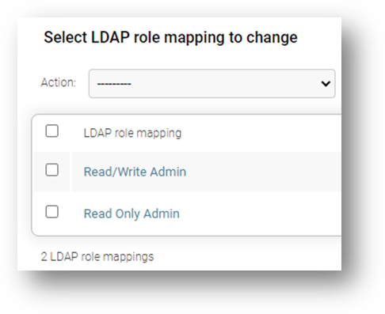
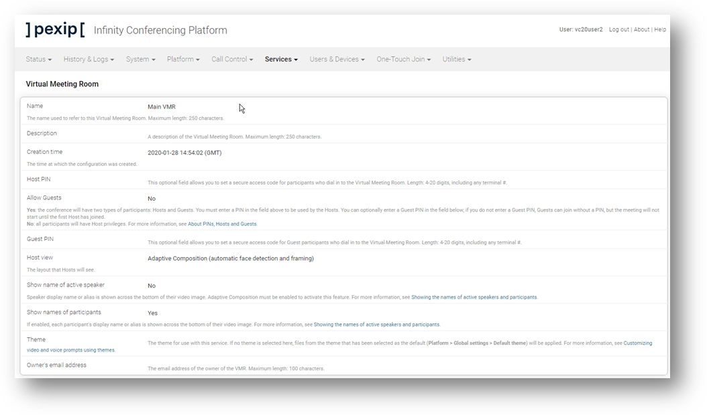

Suggested completion time: 30 minutes
Use section #2 and section #9 of the lab sheet.
To configure LDAP Authentication:
Setup the LDAP server connection:
- Go to Users & Devices --> Administrator Authentication.
- Authentication source: LDAP database and local database.
- Require client certificate: Not required.
- Set the LDAP server address.
- Leave Allow insecure transport unchecked (we like security, and we have just
added some trusted certs).
- Set the LDAP bind username.
- NOTE: LDAP can be difficult. The username should be in the format vcXuserY@pexip.net. If this fails, try just the user part (vcXuserY), or in the format pexip\vcXuserY.
- Set the LDAP bind password.
- Set the LDAP base DN.
- Click Save.
Check the LDAP authentication roles:
- Go to Users & Devices --> Administrator Roles.
- Two common roles should be defined by default, read-only and
read-write.
Setup the LDAP role mapping against the AD group:
- Go to Users & Devices --> LDAP Role Mappings.
- Configure two roles (using names like Read/Write Admins, and Read Only Admins, which will be used to map the predefined administrator roles,
“Read-write” and “Read-only”).
- Select the correct LDAP group DN for each mapping.
- Select the role to map for each mapping (there are two default administrator roles you
can use, “Read-write”, and “Read-only”, which do NOT need to be altered).
- Save.
Testing
When you have configured the LDAP authentication, it’s time to test these privileges. Log out from the
admin account and try to log in as the AD users (but without the domain
part). Once you have tested with restrictive privileges and grabbed the relevant screenshots (see next
step), re-edit the LDAP Role Mappings so that both groups are assigned the Read/Write
role. You can then continue with the rest of the configuration in the labs by using the AD user accounts,
and ensure that any screen captures of the Management Node GUI show the user account in the top right of the
image.
Screenshot 2: Demonstrate your ability to administer a Pexip Infinity system.
A screenshot of the LDAP Role Mappings:

Screenshots showing the different users logged in:
A screenshot showing evidence that the logged-in user has read-only privileges:
Note that this user (vc20user2) is unable to edit the properties of the VMR service.
